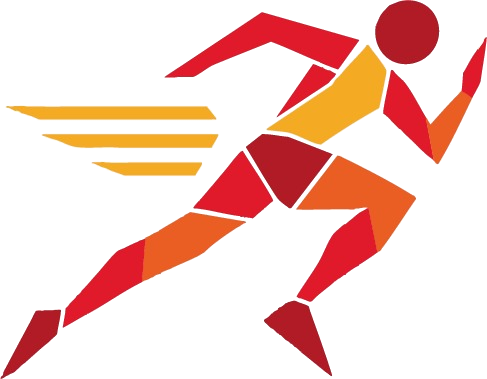
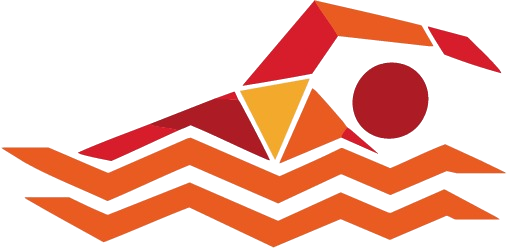
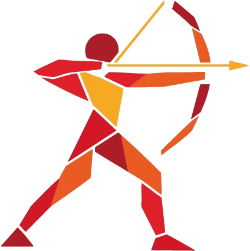

Historia
El atletismo forma parte de los Juegos Olímpicos modernos desde Atenas 1896.

Pictogramas deportivos inspirados en los tejidos andinos bolivianos.
Cargando la experiencia…Diez pictogramas deportivos construidos a partir de formas geométricas inspiradas en los tejidos andinos bolivianos.


Descubre los 10 pictogramas de nuestra colección andina.
El atletismo es una disciplina fundamental de los Juegos Olímpicos. Reúne carreras, saltos, lanzamientos y marcha atlética. Cada prueba pone a prueba la velocidad, la resistencia, la fuerza o la precisión.
El atletismo forma parte de los Juegos Olímpicos modernos desde Atenas 1896.
100 y 400 metros, relevos, saltos, lanzamientos y pruebas combinadas.
Las carreras se miden por tiempo; en saltos y lanzamientos se mide la marca válida. Se usan pistas y equipamiento específicos.
Selecciona una fecha para consultar las pruebas programadas.
* Fechas y horarios ficticios para la demostración académica; no corresponden a un calendario olímpico oficial.
Atletismo · 100 metros planos (final masculina)
| Posición | Atleta | País | Tiempo |
|---|---|---|---|
| 1 | Atleta A | País A | 9,85 s |
| 2 | Atleta B | País B | 9,89 s |
| 3 | Atleta C | País C | 9,94 s |
| 4 | Atleta D | País D | 10,01 s |
* Nombres, países y marcas son ficticios y se incluyen únicamente como ejemplo de interfaz.